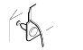
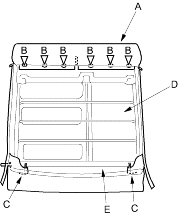
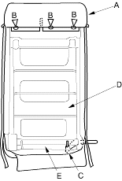
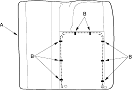
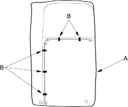

- Pull back the seat-back cover (A) and remove the clips (B) and release the hooks (C).
Fastener Locations
B  : ClipLeft, 6
: ClipLeft, 6
Right, 3

Left seat back:

Right seat back:

- Remove the seat-back cover and pad (D) from the seat-back frame (E).
- Pull back the edge of the seat-back cover (A) all the way around and remove the clips (B), then remove the seat-back cover.
Left seat back:

Right seat back:

- Install the cover in the reverse order of removal and note these items:
- To prevent wrinkles when installing a seat-back cover, make sure the material is stretched evenly over the pad before securing the hooks and clips.
- Replace any clips you removed with new ones. Install them with commercially available upholstery ring pliers.